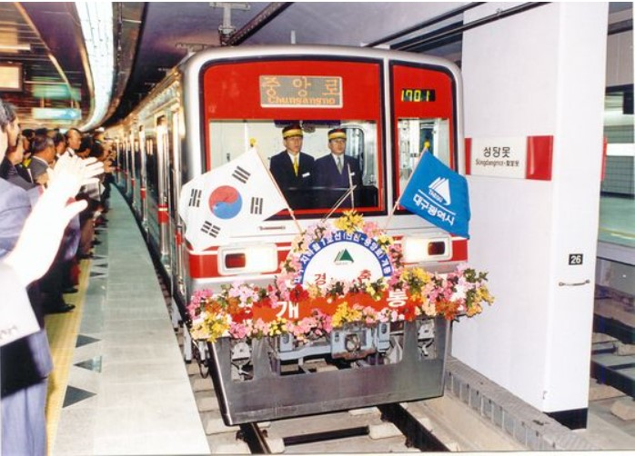

1. 개요
대구광역시 달성군 화원읍의 설화명곡역과 동구 괴전동의 안심역 사이를 잇는 대구 도시철도 노선. 노선색은 빨간색이다.
2. 전 구간 주행 영상
안심행 전 구간 주행 영상
설화명곡행 전 구간 주행 영상
3. 환승역
2호선 : 반월당역
3호선 : 명덕역
4. 특징
환승역은 2호선과 이어지는 반월당역과 3호선과 이어지는 명덕역이 있다.
반월당역~대구역 구간은 역간 거리가 매우 짧아서 출발한 지 거의 1분 만에 도착할 수 있다.
영대병원역~교대역 구간과 대구역 전후, 금호강 하저터널에 급곡선이 있긴 하지만 희한하게도 열차가 기어가야 될 정도로 제한속도가 낮아지는 구간은 거의 없다시피 하다.
배차간격은 RH 5분, 평시 8분, 심야 10분이다.